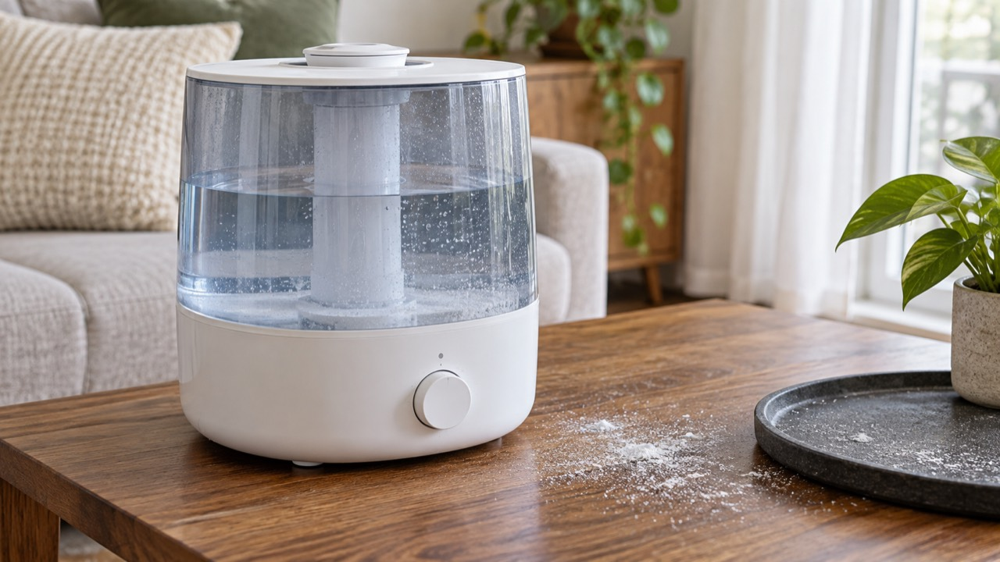

초음파 가습기 주변의 흰가루는 수돗물 속 미네랄 성분이 미세 물방울과 함께 퍼졌다가 마르며 남는 경우가 많습니다. 제품 고장으로 단정하기보다 물 종류, 세척 상태, 분무량과 설치 위치를 먼저 조정하세요.
마른 천으로 닦았을 때 고운 흰 분말처럼 지워지고 가습기 가까운 곳에 집중되면 미네랄 잔여물일 가능성이 큽니다. 끈적하거나 색이 검고 냄새가 난다면 오염 여부를 따로 확인해야 합니다.
향료, 소독제, 식초를 물통에 임의로 넣지 마세요. 세척제 사용 가능 여부와 희석 방법은 모델 설명서를 따라야 하며 서로 다른 세제를 섞으면 안 됩니다. 전기부에는 물이 닿지 않도록 플러그를 뽑고 청소합니다.
가열식·기화식은 흰가루 양상이 다를 수 있습니다. 방식과 필터 유무를 확인하고, 필터가 있는 제품은 교체 주기를 따르세요. 냄새도 난다면 가습기 쉰 냄새 해결 순서를 함께 확인하세요.
세척 후에도 검은 가루가 나오거나 분무구 주변이 변색되고, 누수·이상 소음·탄 냄새가 동반되면 사용을 중단하고 제조사 점검을 받으세요.
LG전자 고객지원 또는 사용 중인 제품 제조사의 모델별 설명서에서 물과 세척제 기준을 확인하세요.